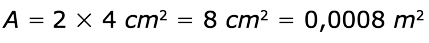
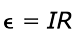
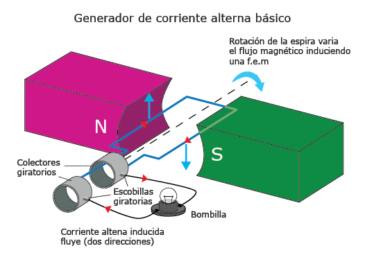

En los grandes depósitos de chatarra del mundo se hace uso de electroimanes que permiten la separación de los elementos metálicos de los no metálicos para su reutilización. Los imanes y sus efectos de interacción con la electricidad tienen gran aplicación en diferentes máquinas de uso cotidiano e industrial; en esta sección estudiarás el magnetismo y, en particular, la magnetostática, es decir, los campos magnéticos constantes en el tiempo. Analizaremos las bases teóricas, las aplicaciones y su relación con la electricidad.
-
01
Magnetostática
Open or CloseEl electroimán, como su nombre lo indica, es un imán que funciona con electricidad. Este potente aparato permite trasladar con facilidad pesos enormes y una rápida selección de material metálico para su reciclaje.
El electromagnetismo
Tanto el uso de la electricidad para crear fuerzas magnéticas como el uso de fuerzas magnéticas para generar electricidad se conoce como electromagnetismo. Estos efectos se ven reflejados en aplicaciones tecnológicas como el electroimán, los motores, los transformadores, los superconductores, entre otros.
Profundiza
01.1El campo magnético de la Tierra
Actualmente, los sistemas de localización por satélite (GPS) y los sistemas de localización en tiempo real (RTLS) usan tecnología basada en señales electromagnéticas, lo que indica el uso necesario de electricidad. Sin embargo, si tienes uno de estos dispositivos móviles y se descarga, ¿cómo podrías ubicarte?
La brújula es un dispositivo que interactúa con el campo magnético producido por la Tierra; con un mapa geográfico y una brújula podrías ubicarte en cualquier lugar, si conoces los puntos cardinales. Es importante saber que el norte geográfico corresponde al sur magnético, según esto ¿cómo explicas que el extremo de la aguja de la brújula siempre señala el norte de la Tierra?, esto puede comprobar que estamos sometidos al campo magnético terrestre.
La brújula es uno de los instrumentos de ubicación y navegación más antiguos, es un dispositivo que contiene una aguja imantada que interactúa con el campo magnético producido por la Tierra. El campo magnético terrestre tiene varios orígenes: el primero, en su centro, más exactamente en la franja exterior del núcleo caliente donde fluyen corrientes de hierro líquido que son conductoras de electricidad; el segundo, la corteza terrestre que está compuesta por rocas más o menos magnéticas y, por último, las corrientes eléctricas atmosféricas producidas entre la energía solar y los componentes de la estratosfera.
La Tierra, como un imán, genera un campo magnético producido mayormente por el núcleo. Si observas, los polos geográficos son opuestos a los magnéticos y entre los ejes de estos se forma un ángulo de diferencia de 11,5º, que se denomina declinación magnética. Considerando la Tierra como un imán de barra, este ángulo puede cambiar dependiendo del lugar geográfico donde te encuentres.
Aunque el campo magnético de la Tierra cambia cada cierto tiempo, con el uso de la brújula es posible movilizarse geográficamente, cuando no tienes un sistema de localización que use electricidad. En el siguiente enlace puedes observar cómo ha cambiado la polaridad del campo magnético de la Tierra a través del tiempo [VER].
01.2Los campos magnéticos
Un campo magnético se genera debido a una carga eléctrica en movimiento. En todos los materiales existen cargas en movimiento; debido a que estas se mueven aleatoriamente, los campos magnéticos generados por cada carga se anulan entre sí. Los imanes tienen organizadas sus cargas en movimiento de tal forma que los campos magnéticos de estas cargas se suman.

Campos producidos por imanes y por electroimanes. Los efectos de un imán en el espacio se deben a sus propiedades naturales de magnetización. Los electroimanes, por otra parte, inducen el campo magnético debido al flujo de carga en un conductor.
La generación de campo magnético constituye la base para la creación de los motores, los generadores o los transformadores, por lo que es importante primero estudiar los efectos del campo magnético sobre cargas eléctricas, como el electrón y el protón, así como en elementos que porten una corriente eléctrica.
Profundiza
01.2.1Los efectos de campo magnético sobre una carga eléctrica
Cuando una carga eléctrica se encuentra en reposo no se ve afectada por la presencia de un campo magnético; por otra parte, si una carga eléctrica se desplaza a través de un campo magnético actuará sobre ella una fuerza magnética dada por:
Donde q es la carga eléctrica, v es la velocidad de la carga y B el campo magnético. Para su operación se utiliza el producto cruz (representado por x), el cual cumple las siguientes condiciones para la fuerza magnética:
- Si la carga se mueve paralela o antiparalela al campo
magnético, el valor de la fuerza será nula.
- Si la carga se desplaza perpendicularmente al campo
magnético, la magnitud de la fuerza:
- Si la velocidad de la carga que se desplaza forma un
ángulo con el campo magnético, la magnitud de la fuerza será:
Donde ? es el ángulo que forman la velocidad de la carga y el campo magnético.
Los experimentos han demostrado que la fuerza magnética siempre es perpendicular a la velocidad de la carga y al campo magnético. Una herramienta que permite analizar el comportamiento de los vectores velocidad de la carga, campo magnético y fuerza magnética es la regla de la mano derecha. Esta regla consiste en usar los dedos de la mano derecha apuntando en la dirección de la velocidad; los dedos se cierran hacia la dirección del campo magnético, de manera que el dedo pulgar señalará la dirección de la fuerza magnética.
Unidades de campo magnético
En el Sistema Internacional de Unidades (SI), F está en Newtons (N), q en Coulomb (C) y v en metros sobre segundos (m/s), la unidad del campo magnético es el Tesla (T).
Casos en los que se presenta una fuerza magnética: 1) en a y b la partícula se mueve paralela o antiparalela al campo magnético F = 0; 2) en c y d la fuerza máxima cuando el campo magnético y la velocidad son perpendiculares; 3) la velocidad y el campo magnético forman un ángulo ? sobre un plano. Si la partícula fuera negativa los resultados en c y d se intercambiarían. La regla de la mano derecha, que tiene en cuenta las direcciones de los vectores, permite identificar la dirección de la fuerza magnética.
01.2.2Los efectos de campo magnético sobre un cable portador de corriente
Las cargas eléctricas en movimiento son la base de la corriente eléctrica en un conductor. Si un cable se coloca dentro de un campo magnético se ejercerá una fuerza magnética sobre el cable proporcional a cuatro factores:
- La intensidad del campo magnético B.
- La corriente eléctrica I en el cable.
- La longitud del cable L que se encuentra dentro del campo magnético.
- El posible ángulo que forme el cable con el campo magnético.
Así, la expresión que permite el cálculo del campo magnético será:
Al igual como sucede con las cargas en movimiento, la regla de la mano derecha permite determinar la dirección de la fuerza; en este caso, la dirección de la corriente y el campo magnético permiten identificar la dirección de la fuerza.
Cómo resolver el producto cruz
Si la corriente y el campo magnético forman un ángulo, la expresión para la fuerza queda de la forma:
Y, por tanto, si la corriente y el campo magnético son perpendiculares la fuerza es:
El campo magnético puede representarse en tres dimensiones a partir de símbolos que indican que el campo sale o entra de la pantalla: piensa en una flecha que se dispara, si esta se dirige hacia ti se observa un punto, pero si se aleja se observa una cruz formada por las plumas en su extremo, esto te ayudará a identificar los vectores y a usar la regla de la mano derecha.
Recuerda que la corriente se representa como cargas en movimiento -en este caso, las cargas positivas que producen una corriente I a lo largo del cable de longitud L-; el campo magnético está dirigido hacia la derecha y puede representarse en tres dimensiones como si saliera o entrara de la pantalla. Los casos a, b, c y d indican las posibles direcciones de la corriente y el campo magnético. Usa tu mano derecha para indicar la dirección de la fuerza magnética.
01.3Consolidación
Actividades para consolidar lo que has aprendido en esta sección.
- Si la carga se mueve paralela o antiparalela al campo
magnético, el valor de la fuerza será nula.
-
02
La generación de campo magnético
Open or CloseEl estudio de la relación entre la electricidad y el magnetismo es uno de los campos más importantes de la física. Como has visto, las cargas libres, o las que se mueven por un conductor, se ven afectadas por un campo magnético produciendo una fuerza. El físico danés Hans Christian Oersted (1777-1851) descubrió que la corriente eléctrica también es una fuente de campo magnético al observar que las agujas de una brújula eran afectadas cuando se acercaba a un cable en el que circulaba una corriente eléctrica.
Del experimento de Oersted se infiere que el campo magnético es, como el eléctrico, un campo de fuerzas cuyos vectores se encuentran dispuestos de manera que conforman circunferencias concéntricas alrededor de la corriente, por esto la brújula gira. Por consiguiente, a diferencia de las líneas de fuerza, las líneas del campo magnético son cerradas.
Es posible analizar el comportamiento del campo producido por una corriente, aunque solo vamos a considerar los casos especiales, como aquellos en donde las cargas en movimiento están asociadas con corrientes que circulan a través de cables rectos y espiras circulares.
02.1La Ley de Ampère
El científico André-Marie Ampère (1775-1836) desarrolló una técnica para determinar el valor del campo magnético producido por una corriente, ya que proporciona una relación entre la corriente en un alambre con forma arbitraria y el campo magnético generado por el mismo. Para que lo puedas entender más fácilmente, piensa en una trayectoria que encierre al cable por el que circula la corriente.
En la imagen del campo magnético producido por un cable portador de corriente, los círculos representan las líneas de campo magnético que se alejan del cable. Para un solenoide o bobina observas que el campo magnético interno depende de la longitud del mismo y del número de espiras o aros que conforman la bobina. En el cable recto, la regla de la mano derecha tiene validez: al apuntar tu dedo pulgar hacia la dirección de la corriente, tus dedos deben rotar hacia la dirección del campo magnético. ¿Qué sucede si la dirección de la corriente va en sentido opuesto?
La regla de la mano derecha
Ten en cuenta que la regla de la mano derecha se usa de distintas maneras de acuerdo con el análisis que vayas a realizar; ya sea para determinar la dirección de la fuerza magnética o la del campo magnético en una barra conductora de corriente. La representación de la posición del dedo pulgar y los dedos que giran muestran distintas magnitudes vectoriales en cada caso.
El método permite identificar, para el caso de un alambre recto, la trayectoria cerrada como una circunferencia, y, para un solenoide (conjunto de espiras cercanas), en su interior como una línea recta donde el número de espiras es proporcional a la magnitud del campo magnético. El valor del campo magnético para los dos casos es proporcional a la corriente I, e inversamente proporcional a la distancia entre el alambre y un punto en el espacio donde se mide el campo magnético r:
Y en el caso del solenoide:
Para el caso del solenoide, N es el número de espiras y L la longitud del solenoide. La constante de proporcionalidad se denomina permeabilidad magnética del vacío ?0 y tiene un valor de:
Los materiales pueden clasificarse a partir de su valor de permeabilidad magnética; solo trabajaremos los campos magnéticos en el vacío.
Como has podido observar, existe una relación directa entre los fenómenos eléctricos y magnéticos, la ley de Ampère es una de la bases de las interacciones, que de aquí en adelante se denominan electromagnéticas.
02.2El electromagnetismo y sus aplicaciones
Como has observado, los fenómenos magnéticos y eléctricos tienen una relación fundamentada en los campos magnéticos producidos por materiales y por el movimiento de cargas en un conductor. El electromagnetismo nace entonces del estudio de las interacciones eléctricas y magnéticas, y las teorías que vinculan los fenómenos, por lo cual en esta sección estudiarás algunos experimentos que explican dichas interacciones electromagnéticas.
Los fenómenos electromagnéticos hacen parte de muchos aparatos de uso cotidiano. El timbre, aunque sencillo, fundamenta su funcionamiento en el uso de un electroimán; a través del interruptor se conduce la corriente para producir un campo magnético, esta interacción atrae el martillo hacia la campana y, a través del contacto que sirve como un interruptor, se repiten los golpes del martillo en la campana.
02.2.1El electroimán
El electroimán es otro aparato que se basa en el uso de espiras de alambre de cobre denominadas bobinas, los motores eléctricos caseros usan estas bobinas que son la base fundamental de la aplicación de la ley de Ampère.
Las partes de un electroimán son:
- Una bobina que se construye a partir de una serie de vueltas de alambre de cobre aislado recuerda que mientras más vueltas tenga la bobina, habrá mayor intensidad del campo magnético. Esta debe rodear un núcleo.
- Un núcleo hecho de un material magnético blando como el hierro hace que la intensidad del campo sea mucho mayor; cuando no circula corriente el campo se anula.
- En una batería para suministrar corriente, el campo magnético será mayor si la corriente aumenta.
Cuando el electroimán se pone en funcionamiento actúa como un imán que atrae los objetos metálicos. En este caso, se muestra un electroimán pequeño, cuyo núcleo está hecho con una puntilla. Al conectar la pila circulará corriente a través del cable en espiral generando una magnetización del núcleo, la cual permite que este actúe como un imán siempre y cuando circule corriente a través de la bobina.
A fin de determinar el valor de la fuerza que se requiere para levantar un objeto es necesario conocer algunas propiedades de los materiales magnéticos. Existen algunos metales en los que sus átomos pueden actuar frecuentemente como imanes elementales, alineándose como si se sometieran a la influencia de un campo magnético. Cuando esto ocurre se magnetizan, convirtiéndose en un imán temporal, o en un imán permanente como sucede con el electroimán.
Los metales que se magnetizan con facilidad reciben el nombre de paramagnéticos, y los que no se magnetizan o son difíciles de magnetizar se denominan diamagnéticos.
Entre los paramagnéticos, los metales más fáciles de magnetizar se denominan ferromagnéticos, debido a que fue el hierro en el que se detectó por primera vez esa propiedad; se consideran también ferromagnéticos otros metales como el níquel, el cobalto y algunas aleaciones especiales.
Representación del campo magnético en los átomos de un material ferromagnético. Bajo la acción de un campo magnético exterior, los ejes magnéticos de los átomos se alinean en la dirección del campo, este efecto permite que el material se convierta en un imán temporal como sucede en el electroimán.
Ahora bien, en ocasiones, los electroimanes se construyen para que produzcan una fuerza de atracción. Esta fuerza de atracción es proporcional a una constante que combina la dependencia del medio donde se produce el campo magnético y la simetría del campo, así como la superficie de contacto entre el núcleo del electroimán con el elemento metálico que atraiga. La expresión que permite calcular la máxima fuerza es:
Donde B es la magnitud del campo magnético y A es el área de contacto entre el núcleo del electroimán y el cuerpo que se atrae.
Cálculo de la fuerza en un electroimán
Ejemplo
Determina la fuerza con la que atraerá el electroimán de la figura a la armadura de hierro si la inducción que aparece en el núcleo es de 1,3 T.
La superficie de atracción de uno de los polos es:
Como se calculará la fuerza de atracción de los dos polos, el área de contacto total es:
La fuerza es, entonces:
Con esto el electroimán estaría en capacidad de levantar una masa de alrededor de 5 kg.
La gran ventaja de los electroimanes frente a los imanes permanentes es que los electroimanes se pueden imantar y desimantar a voluntad, por lo que se aplican en grúas de chatarrerías y en la construcción de motores y timbres eléctricos, entre muchos otros aparatos.
02.2.2El motor eléctrico
La necesidad de transformar energía eléctrica en energía mecánica resultó en los motores eléctricos que consiguieron relacionar estas energías a través de las interacciones entre fuerzas magnéticas, de manera que fueran transformadas en energía cinética rotacional que permite, por ejemplo, el funcionamiento de las unidades de DVD, las licuadoras, etc.
Recuerda
La energía cinética rotacional es aquella asociada a un cuerpo que rota a una velocidad angular dada. Esta energía depende de la velocidad angular y la forma del cuerpo.
Esquema de un motor eléctrico simple de corriente continua. La parte fija o estator es un imán permanente, mientras que la giratoria o rotor es una bobina conductora, a través de la cual pasa la corriente. El eje transmite el movimiento giratorio de la bobina.
En un motor, la bobina está situada en el centro y se encuentra unida a un eje que transmite el movimiento generado por ella. Esta parte central del motor se llama rotor o armadura. El imán fijo que lo rodea se llama estator. Cuando circula corriente por la bobina, el campo magnético del estator la hace girar y la energía cinética que adquiere se transmite al eje que, a su vez, hace mover, por ejemplo, las palas de un ventilador, la licuadora, la lavadora o la batidora. Los motores eléctricos se pueden clasificar, según la corriente empleada, en: motores de corriente continua, motores de corriente alterna y motores universales (que sirven para los dos tipos de corriente).
Recuerda
La corriente continua es aquella corriente que es constante. Por otra parte, la corriente alterna presenta cambios en el tiempo (usualmente en forma de función sinusoidal).
02.3Consolidación
Actividades para consolidar lo que has aprendido en esta sección.
-
03
La inducción electromagnética
Open or CloseAsí como el experimento de Hans Oersted permitió identificar la relación entre corriente y campo magnético, otros científicos buscaron describir el fenómeno opuesto a través de la pregunta: ¿cómo generar corriente eléctrica a partir de campos magnéticos?
Los experimentos realizados de manera independiente por Michael Faraday, en Inglaterra, y Joseph Henry, en Estados Unidos, demostraron que un campo magnético variable en el tiempo puede producir o inducir una corriente en el circuito, fenómeno que estudiaremos a continuación.
03.1El flujo magnético
En la magnetostática, el campo magnético permanece constante en el tiempo; para comprender el concepto de inducción magnética es necesario que conozcas primero el concepto de flujo magnético, lo que implicará más adelante que el campo magnético sea variable en el tiempo.
El flujo magnético podría definirse como una representación asociada al número de líneas de campo magnético que atraviesan una superficie. Debido a que el campo magnético es un vector y la superficie representará un área, tanto el campo como el área pueden formar un ángulo, el flujo se expresa entonces como:
Donde ? es la magnitud del campo magnético en Weber (Wb), A es el área de la superficie que atraviesa el campo magnético y ? el ángulo que forman la línea perpendicular a la superficie y las líneas del campo magnético.
Posibles casos de flujo magnético; la línea resaltada en negro representa una línea perpendicular a la superficie. a) existe un ángulo entre el campo y la línea perpendicular a la superficie; b) el flujo es mayor cuando la superficie es perpendicular al campo magnético por lo que ? = BA; c) el flujo es cero cuando la superficie es paralela al campo magnético.
Al pensar en motores eléctricos el propósito es relacionar la transformación de energía eléctrica en energía mecánica. Cuando se hace fluir una corriente eléctrica a través de una armadura que se encuentra en un campo magnético, dicha armadura gira, este es el principio de un motor eléctrico. Pero cuando una armadura gira en un campo magnético que produce en ella una corriente eléctrica, este aparato es un generador eléctrico.
Los trenes eléctricos aplican dos principios: el mismo sistema que actúa como motor para mover el tren en las subidas, se usa como generador cuando el tren va de bajada. El operador cambia un interruptor que permite que la energía cinética del tren se use para producir energía eléctrica, la cual se almacena a través de las líneas de alimentación para que otros trenes la usen. Consulta cómo funciona el alternador de un automóvil.
Profundiza
03.2La ley de inducción de Faraday y la ley de Lenz
La ley de inducción de Faraday establece que si existe un cambio en el flujo magnético en el tiempo a través de una superficie, en cierto intervalo de tiempo se inducirá una fuerza electromotriz (fem). La expresión más simple de la ley de Faraday permite relacionar la fem? inducida en la bobina con la variación del flujo magnético que atraviesa la bobina:
Donde N es el número de vueltas de la bobina y el segundo término corresponde a la variación del flujo magnético en el tiempo.
El movimiento del imán cuando ingresa a la bobina hace que el flujo a través de la espira aumente. La ley de Lenz requiere un flujo que se oponga al incremento del flujo que es generado por una corriente hacia la izquierda. Cuando el imán sale del bobinado hace que el flujo a través de la espira disminuya. La ley de Lenz requiere un flujo que se oponga a la reducción del flujo que es generado por una corriente hacia la derecha.
El signo menos en la ley de Faraday es fundamental; este indica que la fem inducida se opone a la variación del flujo magnético (como se indica en la figura). Esta característica es de suma importancia y recibe el nombre de ley de Lenz.
Debido a que existe una resistencia en el sistema, también, es necesario aplicar la ley de Ohm que se expresa como:
03.3Los generadores de corriente eléctrica
Como has observado, la ley de inducción permite la construcción de instrumentos que transforman la energía mecánica en eléctrica. Un generador eléctrico usa como principio la ley de inducción y hace parte fundamental de la energía que consumimos a diario para recargar baterías, usar electrodomésticos, etc. Las fuentes de la energía mecánica pueden ser diversas como: la caída de agua en una central hidroeléctrica; las turbinas de vapor en centrales de biocombustible, de masa y nucleares; y, cada vez más, el viento se usa como fuente de energía mecánica.
Como sabes, la corriente eléctrica inducida requiere que se presente un cambio en el flujo magnético, en este caso, tanto el área de la bobina como la magnitud del campo magnético permanecen con valores constantes, de manera que para que se produzca el flujo magnético, debe producirse un cambio en el ángulo, debido a la rotación de la espira. Si la bobina gira con una velocidad angular constante ?, el ángulo de giro puede expresarse como:
Al combinar esta ecuación podrás determinar la magnitud de la fuerza electromotriz inducida reemplazando la expresión de la ley de inducción de Faraday y la expresión del flujo magnético (como se ve en la sección 3.1):
Así, la expresión de variación en el paréntesis puede calcularse con la ayuda del límite o de la derivada con respecto al tiempo, de manera que la fem es:
Recuerda
En la derivación de funciones trigonométricas:
Esquema de un generador de corriente alterna básico; tanto la ley de inducción de Faraday como la ley de Lenz permiten que la bombilla encienda. Debido a que la fem inducida es sinusoidal la intensidad de la luz variará en el tiempo.
El comportamiento del sistema es sinusoidal, esto permite ver que se obtiene una variación periódica de la fuerza electromotriz, ya que el plano de la bobina en algunos momentos estará paralelo al plano del campo magnético, donde la fem será máxima, y, en otro momento, los dos planos serán perpendiculares, por lo que la fem será nula.
Profundiza
03.4Consolidación
Actividades para consolidar lo que has aprendido en esta sección.
-
04
Competencias
Open or ClosePon a prueba tus capacidades y aplica lo aprendido con estos recursos.
-
Fin de unidad:
Open or Close
repaso